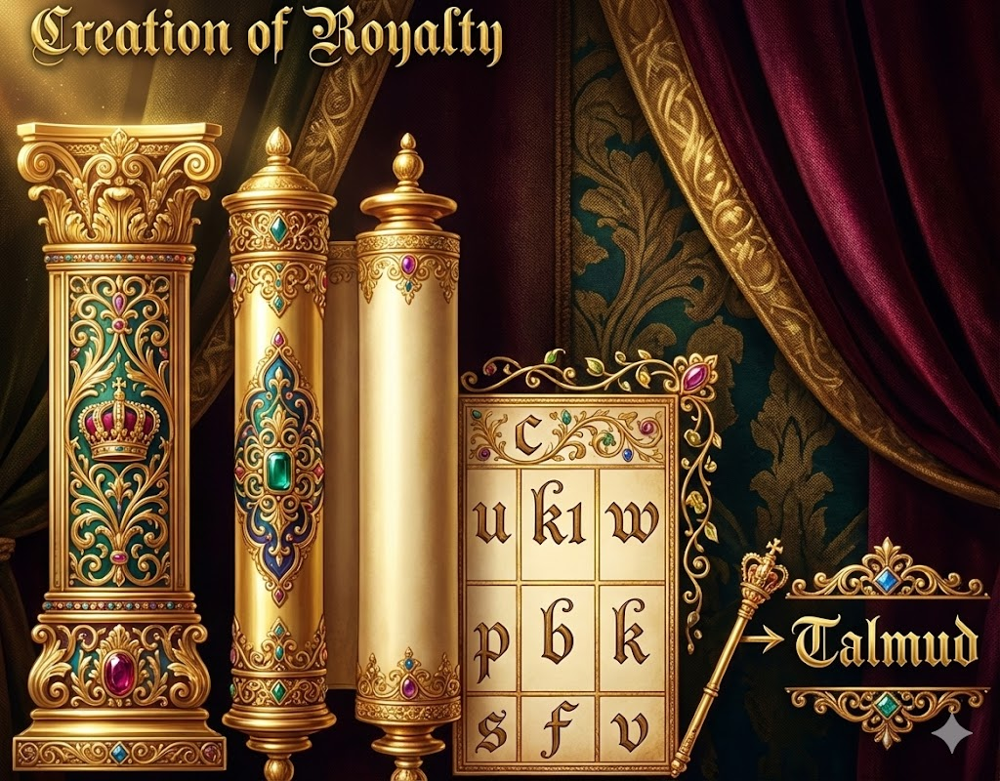

Section II — The Structure of Knowledge
The Sephirotic Structure of Knowledge
Just as the physical universe is structured according to the Divine emanations (sephirot), so too is the landscape of Torah and human knowledge. The "Diagram" referred to below maps out how different disciplines of study align with these spiritual channels. By understanding this structure, one can navigate the sea of knowledge not as a random collection of facts, but as a unified system of Divine wisdom essential for the rectification of the soul.

The following key decodes the correspondence between the Sephirot and the various fields of study shown in the diagram above. Each number represents a specific node in this spiritual array:
| ID | Subject | The Spiritual Context |
|---|---|---|
| 8 | Kabbalah (The Zohar) | The root of inner wisdom. The continuation downward flows into the later Kabbalists. |
| 13 | Philosophy (Rambam's System) | Represents rational inquiry. (Note: The Ramchal would not agree with this placement, seeing philosophy as external). |
| 14 | Biology | The study of the "Animals and Plants" of the universe, rooted in the divine attribute of life variation. |
| 15 | Chemistry | Matter and its transformations. |
| 16 | Physics | The fundamental laws of forces and energy. |
| 17 | Mathematics | The abstract logic that underpins the physical reality. |
| 18 | Talmud | The "Outer Light." Its illumination continues vertically downward through the commentaries. |
| 24 | Mishna | The foundation of Oral Law. Its continuation is through the legal authorities: Rif, Rambam, Rosh, Tur, Shulchan Aruch. |
| 27 | Bible | The written word of God, the foundation of all. |
| 28 | Targum | The translation/interpretation, bridging the holy tongue to the nations. |
The Daily Curriculum
To maintain a balanced spiritual diet, one should ideally ingest "one class" from each of the main four categories daily. For instance:- Bible (Written Law)
- Mishna/Halacha (Codified Law)
- Talmud or Science (The "Give and Take" of Wisdom)
- Kabbalah (The Secrets)
The Books of Beauty (Zeir Anpin)
On the level of Zeir Anpin (the specific emotional attributes of God, often associated with "Beauty"), we find a library of works that balance the intellect and the heart. The books which emanate from the Beauty of Atzilut (Emanation) include:- Crown: Sipurai Maasiot (Rabbi Nachman's Stories) - The highest, simplest, yet deepest level.
- Wisdom: Tanya - The intellectual approach to Divine service.
- Understanding: Noam Elimelech - The emotional depth of the righteous.
- Malchut & The Six Attributes: Likutai Moharan and Sefer HaMidot.
(Note: This classification aligns with the Rambam and Chovot Halevavot's view of serving God through refined intellect and character). †

Sephirot Mapping: The Prophets and Writings
The diagram above details the "physicality" of the Sephirah of Beauty (Zeir Anpin). In this intricate structure, every letter corresponds to a channel of Divine influence:
- c (Crown): The root of the Five Books of Moses.
- w, u, k (Wisdom, Understanding, Kindness): The roots of the Prophets (*Nevi'im*). Specifically, the Right and Left columns hold the prophets.
- p, b, v (Power, Beauty, Victory): The Middle Column holds the roots of the Sacred Writings (*Ketuvim*), such as Psalms and Proverbs.
The Formation of Royalty: Mishnaic Structure
The next diagram illustrates the world of Formation (Yetzirah), which corresponds to the Mishna. The six orders of the Mishna map directly to the lower sephirot of this world.
- Seeds, Times, Women: The middle three attributes [Power, Beauty, Kindness] are the root of these first three orders.
- Damages, Sacrifices, Purity: The lower three attributes [Victory, Splendor, Foundation] form the root of the latter three.
This means that study is an act of spiritual engineering. By learning the specific tractates, one draws specific Divine Names into their corresponding vessels:
- Seeds (Zeraim): Draws the light of the name mlp la pla from the upper vessels into Kindness.
- Times (Moed): Draws the light of myhla (Elohim) into Power.
- Women (Nashim): Draws the light of tvabe into Beauty.
- Damages (Nezikin): Draws the light of laa into Victory.
- Sacrifices (Kodshim): Draws the complex light of myhla yhla hla laa into Splendor.
- Purity (Taharot): Draws the light of yds (Shaddai) into Foundation.

The Infinite Grid: The Four Worlds of Learning
Understanding this, we see that the Talmud is not monolithic. The "Talmud" we typically study is often just the Talmud of the Nefesh (the lowest level of soul). This explains why it can sometimes feel dry or disconnected. The goal is to ascend the ladder. The Talmud is incomplete because the souls of many of the Amoraim (Talmudic Sages) were rooted in Beauty of Emanation, but the text we have has descended. The true structure is a fractal grid, where every level exists within every other level:| World | Level | Content |
|---|---|---|
| Emanation (Atzilut) The World of Divine Nearness |
Kabbalah | The "Kabbalah of Kabbalah" (Purest Essence) |
| Talmud | The Logic of Divinity | |
| Mishna | The Structure of Emanation | |
| Bible | The Word in Emanation | |
| Creation (Beriah) The World of the Throne/Intellect |
Kabbalah | Kabbalah of the Intellect |
| Talmud | Talmud of Talmud (Standard Deep Study) | |
| Mishna | Mishna of the Intellect | |
| Bible | Bible of the Intellect | |
| Formation (Yetzirah) The World of Emotion/Forms |
Kabbalah | Kabbalah of Mishna |
| Talmud | Talmud of Mishna | |
| Mishna | Mishna of Mishna (Standard Law) | |
| Bible | Bible of Mishna | |
| Action (Asiyah) The Physical Space-Time |
Kabbalah | Kabbalah of the Bible |
| Talmud | Talmud of the Bible | |
| Mishna | Mishna of the Bible | |
| Bible | Bible of the Bible (Simple Reading) |